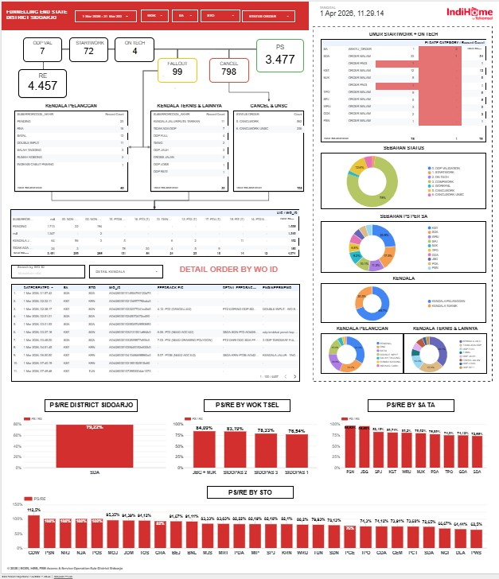

Proyek ini merupakan bagian dari kegiatan magang di PT Telkom Infrastruktur Indonesia (TIF) pada divisi Access Service Operation (ASO), yang berfokus pada peningkatan kualitas data operasional serta pengembangan sistem monitoring berbasis dashboard untuk mendukung pengambilan keputusan secara real-time.

Data operasional PS–RE dan WO Endstate memiliki volume besar dan terus diperbarui setiap hari, sehingga sering terjadi inkonsistensi, duplikasi, serta ketidaksinkronan antara data sistem dan kondisi lapangan. Hal ini menyebabkan proses monitoring menjadi tidak efektif, dashboard berpotensi mengalami error, serta memperlambat proses pelaporan dan pengambilan keputusan oleh tim Helpdesk.
Meningkatkan akurasi dan konsistensi data operasional serta membangun dashboard monitoring interaktif yang mampu menampilkan status pekerjaan teknisi secara real-time untuk mendukung evaluasi kinerja dan pengambilan keputusan operasional.
Mengimplementasikan proses data checking dan validasi secara berkelanjutan terhadap dataset operasional, serta mengembangkan dashboard monitoring berbasis Looker Studio yang mengintegrasikan berbagai status pekerjaan teknisi seperti PS, RE, Cancel, Work, On Tech, dan Fallout dalam satu platform terpusat.
Permasalahan utama dalam operasional bukan hanya terletak pada kurangnya visualisasi, tetapi pada kualitas data yang belum stabil akibat perubahan real-time dan perbedaan input teknisi. Tanpa proses validasi yang kuat, dashboard tidak hanya menjadi tidak akurat, tetapi juga berpotensi menyesatkan pengambilan keputusan.
Dengan adanya proses validasi data yang konsisten serta integrasi dashboard, monitoring operasional menjadi lebih terstruktur, transparan, dan dapat digunakan sebagai sumber kebenaran utama (single source of truth).
Berperan dalam proses validasi data operasional, pengembangan dashboard utama dan dashboard pendukung, serta maintenance dashboard secara berkala. Selain itu, juga terlibat dalam kegiatan uji petik lapangan dan input data pelanggan ke sistem CACTI untuk memastikan kesesuaian data dengan kondisi aktual.
Dashboard yang dikembangkan telah digunakan secara aktif oleh tim Helpdesk sebagai alat monitoring utama dalam kegiatan operasional, termasuk housekeeping mingguan bersama Telkomsel. Implementasi ini berhasil meningkatkan akurasi data, mempercepat proses monitoring, serta mendukung pengambilan keputusan berbasis data secara lebih efektif.